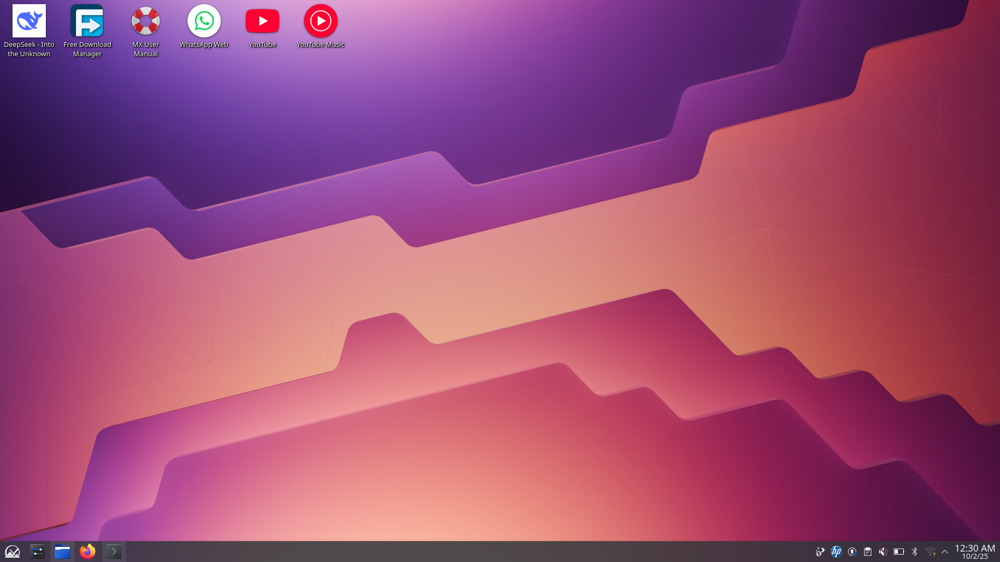
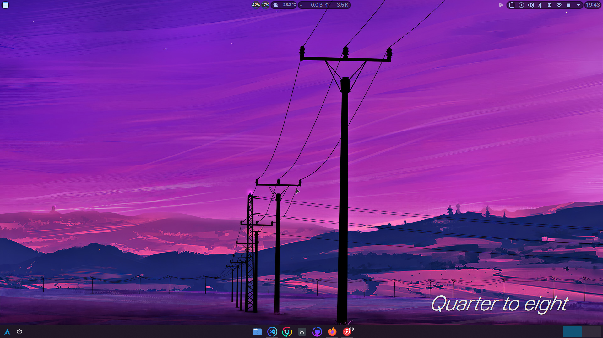

Default Plasma Look
-
Visual Design & Aesthetics
- Bright, clashing colors (wallpaper + mixed icons). A bit generic.
- Flat bottom panel with small app launchers + tray icons crammed together.
-
Visual Design & Aesthetics
- Bright, clashing colors (wallpaper + mixed icons). A bit generic.
- Flat bottom panel with small app launchers + tray icons crammed together.
-
Visual Design & Aesthetics
- Bright, clashing colors (wallpaper + mixed icons). A bit generic.
- Flat bottom panel with small app launchers + tray icons crammed together.
Cyperbunk
Features
-
Visual Design & Aesthetics
- Similar to Microsoft windows style, easy for windows users to pick uo
- Beautiful, high-contrast, spiky design
- Might be too colorful for some users
- Dock centered at the bottom → macOS-inspired, faster recognition, stronger focus on core apps.
- **Minimal tray icons** moved to the **top bar** → clearer separation of system vs. app controls.
- Improvement**: Better **hierarchy** — bottom dock = productivity, top bar = status info.